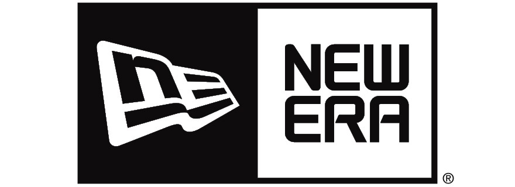
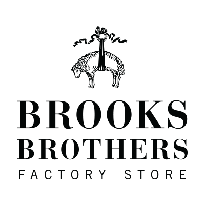
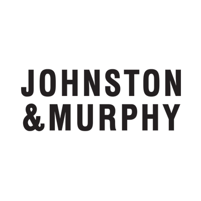
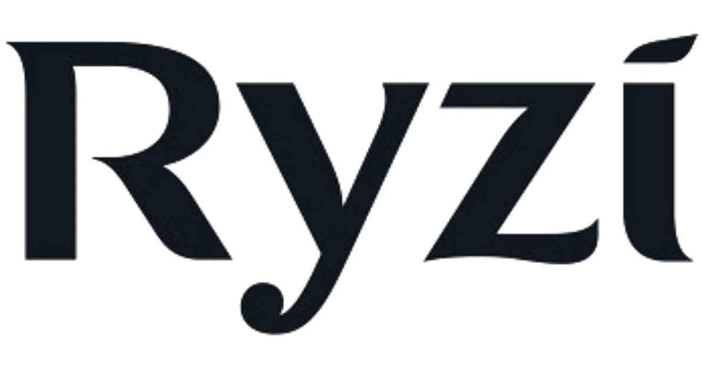

Las mejores marcas de cada articulo de ropa
La creación de marcas de moda va mucho más allá de tener ideas innovadoras y diseñar prendas inigualables. Estas habilidades deberán combinarse con un proceso de análisis adecuado del público objetivo, así como las herramientas y el conocimiento adecuados.
La mejor marca para gorras
New Era
Con esta marca, comenzó una nueva era en el diseño del sombrero. El deporte al aire libre marcó
una nueva necesidad de proteger la cabeza: comodidad y concentración. Y así nacieron las gorras
de New Era, una marca con tradición. Sus icónicos logos han pasado de generación en generación
y hoy son auténticos objetos de culto.

La mejor marca para camisas
Brooks Brothers
Elegancia, buenos materiales y diseños que no pasan de moda. Esto hace de Brooks Brothers una de
las mejores marcas de camisas para hombre y con la que iniciamos nuestra lista. Esta marca es todo
un referente en la moda masculina estadounidense e incluso ha vestido a prácticamente todos los
presidentes de aquel país. Sus camisas más vendidas son las de vestir, misma que tienen disponibles
en tres modelos: Milano, Regent y Madison.

La mejor marca para jeans
Calvin Klein
En los años 80 no había nada más cool que llevar un par de jeans Calvin Klein y desde entonces se han
convertido en los más populares entre los hombres. La marca americana cuenta con distintos colores
y estilos para que puedas tener variedad y encontrar lo que mejor se acomoda a lo que buscas.
La mejor marca para zapatos
Johnston & Murphy
Johnston & Murphy es una famosa empresa americana de calzado y ropa fundada en 1850 en Nueva Jersey
por William J. Dudley, James Johnston, William A. Murphy. Actualmente tiene su sede en Nashville,
Tennessee. Esta singular marca comercializa y vende zapatos en más de 92 países y se ha ganado la
aceptación mundial y la reputación de ser uno de los mejores fabricantes de calzado y prendas de vestir
formales para hombres. Johnston & Murphy produce plantillas ligeras, acolchadas y extraíbles para asegurarse
de que el comprador reciba el zapato perfecto que se merece.

La mejor marca para accesorios
RYZI
Si tu estilo es más vanguardista que vintage, la marca brasileña RYZI probablemente tenga algo para ti.
Con una inclinación por las formas geométricas y la estética innovadora, se enfocan en producir piezas de
cuero de alta calidad. Un ejemplo de alta calidad serian los microbolsos Leia que está inspirado en el
futurismo, y probablemente será la pieza de diseño más expresiva de tu armario una vez que lo consigas.
